汤神近5年学术成果集锦
原文：https://mp.weixin.qq.com/s?__biz=MzAwMzIzOTk5OQ==&mid=2247532347&idx=1&sn=a09f432dec4ab0c2b08385aee9365512&chksm=9b3c066bac4b8f7d63e076022a925add97dab0bc5ea0bac64f72741ea4ad4138ca645e2a0c2e#rd 合集：文献速递
一、写在前面
此前汤富酬老师入选2025年中国科学院院士增选有效候选人名单！本文案本想用于汤神当选院士的奔走相告，但是尘埃落定，让我们期待来年吧，哪个单细胞人，不期待汤老师评上院士呢？
北京大学生物医学前沿创新中心研究员，北京未来基因诊断高精尖创新中心研究员、副主任，北大-清华生命科学联合中心研究员 , 国家杰出青年科学基金获得者。1998年本科毕业于北京大学，2003 年研究生毕业于北京大学生命科学学院，获博士学位。2004-2010 年在英国剑桥大学Gurdon研究所从事博士后研究，2010年回国于北京大学组建实验室，主要从事人类生殖系发育以及肿瘤发生的单细胞功能基因组学研究。系统发展了单细胞高通量测序技术体系，开启了单细胞组学测序时代。汤老师曾获得国家优秀青年科学基金（2013年）和国家杰出青年科学基金（2016年）资助，2020年入选中国高被引学者榜单，2023年入选第二期新基石研究员项目资助。
汤富酬教授在科研生涯中开创性地建立了单细胞功能基因组学高通量测序技术体系，开启了单细胞转录组测序时代，并利用这些技术对人类早期胚胎发育、生殖系细胞异质性及癌症机制进行了深入解析。他的研究成果发表在《Nature》、《Cell》、《Science》等顶级期刊上，总引用超过11,000次。他还多次受邀在国际学术会议（如AGBT、ISSCR）作报告，并主持冷泉港亚洲单细胞基因组学会议（2016、2018）。
科研经历与主要成就：
教育与早期研究（1994-2003）：1994年考入北京大学细胞生物学及遗传学系，1998年获理学学士学位，2003年获理学博士学位。博士期间开始涉足干细胞与胚胎发育研究，奠定单细胞组学基础。
博士后阶段（2004-2010）：在剑桥大学Gurdon研究所从事博士后工作，2009年发表世界上第一篇单细胞mRNA测序文章（Nature Methods），仅用不到一年时间开发出高灵敏度microRNA单细胞测序技术和单细胞转录组测序技术，实现从0到1的突破，推动了单细胞RNA-seq领域的快速发展（如后续Smart-seq、CEL-Seq等方法）。
回国组建实验室（2010年起）：2010年返回北京大学，专注于人类早期胚胎及生殖系细胞的单细胞功能基因组学研究。先后开发出多项核心技术，包括：
第一个单细胞DNA甲基化组高通量测序技术（2013）。
第一个单细胞多组学平行测序技术（scTrio-seq, 2016）。
第一个单细胞表观基因组多组学测序技术（scCOOL-seq, 2017）。
高精度单细胞转录组单分子测序技术（SCAN-seq, 2020）。
单细胞基因组单分子测序技术（SMOOTH-seq, 2021）。
关键研究贡献：
与乔杰团队合作，2013年绘制人类着床前胚胎高精度单细胞转录组图谱（Nature Structural & Molecular Biology）；2014年揭示人类植入前胚胎DNA甲基化重编程机制（Nature）。
2015年解析人类早期胚胎发育的表观遗传调控（Cell）。
2017-2018年系统分析人类生殖系细胞发育轨迹，揭示雌性/雄性胚胎生殖细胞异步发育阶段及信号传导相互作用（Cell Stem Cell, Nature Genetics, Nature Cell Biology）。
扩展至癌症领域，如2018年揭示人类结肠癌发病新机制（Science）和消化道发育细胞图谱（Nature Cell Biology）。
学术产出：发表70余篇论文，其中50余篇为通讯/共同通讯作者，发表于Cell（2013, 2015）、Nature（2014, 2016, 2018）、Science（2015, 2018）等，总影响因子近300。代表性合作包括与童明汉、李劲松团队建立小鼠精子发生转录组图谱（2020）。
汤富酬教授的研究不仅深化了对人类发育机制的理解，还为再生医学和癌症治疗提供了重要工具和技术支撑。
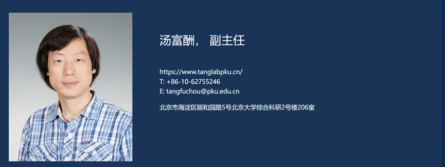
二、主要文章
以下展示几篇汤神近五年发表的科研论文，感兴趣的小伙伴可以follow汤神的ORCID：
https://orcid.org/0000-0002-8625-7717
一、题目： Single-cell long-read Hi-C, scNanoHi-C2, details 3D genome reorganisation in embryonic stage germ cells
IF：10.1
期刊：Nature Structural & Molecular Biology
发表日期：2025.06
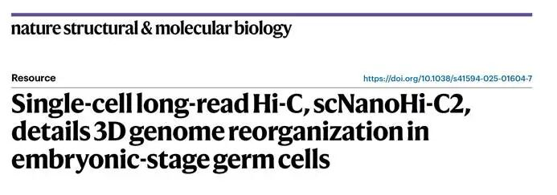
该研究在该实验室此前建立的 scNanoHi-C 技术的基础上发展了一种适用于单细胞起始的单细胞染色质构象捕获的升级版方法 scNanoHi-C2 ，**实现了在单细胞水平高效检测稀有样本中单倍型特异的 染色质构象及高阶互作。**运用该方法，研究者系统绘制了小鼠 E11.5 至 E18.5 胚胎期生殖细胞在单细胞水平的三维基因组结构重编程图谱。
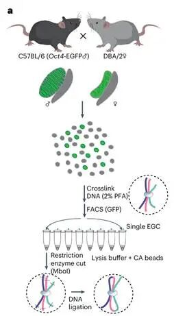
二、题目：Multi-omics analysis reveals single-cell meiotic hotspot dynamics and epigenomic regulations in female mammals
IF：6.9
期刊：Cell reports
发表日期：2025.08
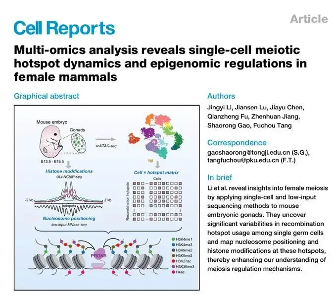
该研究绘制了全基因组的活性重组热点，并在单细胞分辨率下估计了它们在女性EGCs中的活性，揭示了单个生殖细胞中热点使用频率的高度变异性。对重组热点核小体定位和组蛋白修饰的进一步研究表明，与较少使用的热点相比，prdm9介导的开放染色质和侧翼H3K4me3在高频热点建立得更早。出乎意料的是，虽然重组热点通常分布在异染色质之外，但H3K9me3在女性的热点周围明显富集，形成了独特的H3K4me3/H3K9me3二价状态。研究发现，下游 DSB修复可能需要适当的H3K9me3水平。总之，本研究结果提供了对重组热点的景观和表观基因组调控的理解。
三、题目：scExtract: leveraging large language models for fully automated single-cell RNA-seq data annotation and prior-informed multi-dataset integration
IF：9.4
期刊：Genome Biology
发表日期：2025.06
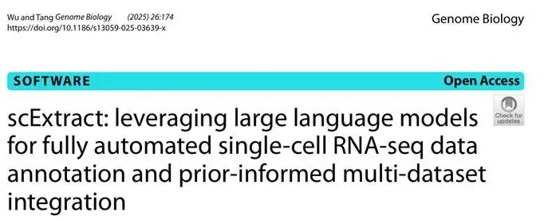
该研究提出了一个利用LLM进行scRNA-seq数据预处理、注释和集成的自动化分析框架scExtract。**scExtract 首次将LLM与单细胞分析深度融合，可以使用注释感知方法从已发表研究文章中全自动提取和集成单细胞RNA-seq数据，显著提升了单细胞数据集处理效率，并在基准测试中优于现有的参考传递方法。**同时，研究人员开发了新的整合算法scanorama-prior和cellhint-prior，通过结合先验注释信息，在提高批处理校正效果的同时，保持了生物多样性的完整性。 此外，研究通过整合14个数据集创建了一个包含44万个细胞的全面人体皮肤图谱，突出了scExtract框架在不同单细胞组学测序数据集中揭示新生物学见解方面的实用性和有效性。
四、题目：Chromatin accessibility landscape of mouse early embryos revealed by single-cell NanoATAC-seq2
IF：45.8
期刊：Science
发表日期：2025.03
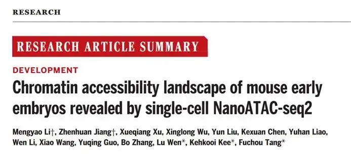
该研究中基于单分子长读段测序平台的单细胞scNanoATAC-seq技术，开发了创新的单管反应体系NanoATAC-seq2 ，将多个实验步骤集成在单个反应管中完成，最大程度降低了样品损失。通过长片段富集，极大降低了文库的线粒体 DNA 污染比率，实现了从单个细胞起始样本获取高质量的染色质可及性信息。研究团队采用scNanoATAC-seq2 技术对小鼠着床前胚胎各发育阶段进行了系统、深入的单细胞分辨率染色质可及性分析。
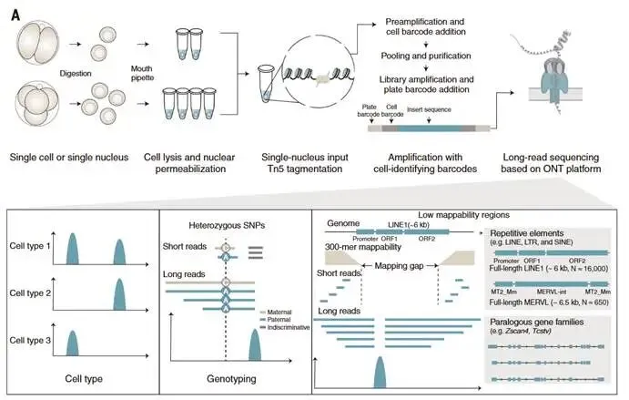
五、题目：Single-Cell Chromatin Accessibility Analysis Reveals the Epigenetic Basis and Signature Transcription Factors for the Molecular Subtypes of Colorectal Cancers
IF：33.3
期刊：Cancer discovery
发表日期：2024.06
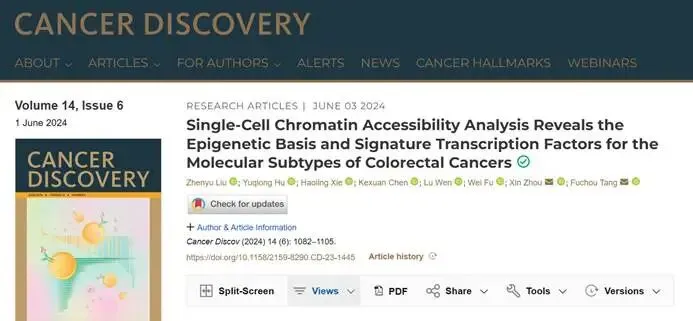
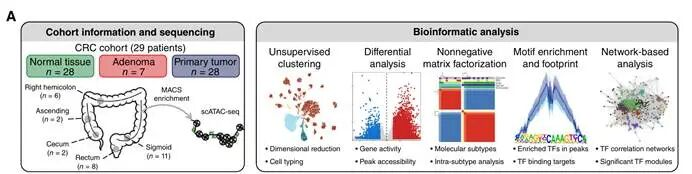
该研究中作者通过单细胞染色质可及性分析，系统揭示了结直肠癌分子亚型的表观遗传基础和特征转录因子,为理解结直肠癌的分子异质性提供了重要线索，为个性化治疗和靶点发现奠定了基础。主要有以下发现：
**1.**表观遗传变化与肿瘤演化
从正常结直肠上皮到腺瘤再到癌细胞的转变过程中，染色质可及性发生显著变化，且这些变化与DNA甲基化呈反向协同关系。腺瘤阶段获得的异常染色质状态在癌细胞中大多保留，提示表观遗传改变在肿瘤发生早期即起关键作用。
**2.**分子亚型的表观遗传特征
通过无监督分析，发现结直肠癌恶性细胞存在两种表观遗传亚型，与基于单细胞转录组的内在共识分子分型（ICMS）完全匹配。ICMS2亚型特异性转录因子包括HNF4A、PPARA，ICMS3亚型特异性转录因子为FOXA3、MAFK。这些转录因子通过调控不同靶基因集，塑造了亚型间的异质性。
3.肿瘤内异质性的调控机制
对肿瘤内亚克隆的分析显示，不同亚克隆具有不同的染色质可及性景观，且在肿瘤演化过程中，亚克隆逐渐获得典型分子亚型特征。例如，ICMS2亚型的亚克隆中，HNF4A和PPARA活性随演化增强，对应ICMS2模块基因表达上调。
4.CIMP亚型的表观遗传特征
鉴定了CpG岛甲基化表型（CIMP）亚型，发现CIMP-HIGH亚型染色质状态异常程度较低，转录因子LEF1和TCF3活性较高，而KLF家族转录因子在CIMP-HIGH关闭的染色质区域富集，可能与基因沉默相关。
六、题目：Drug repurposing screening and mechanism analysis based on human colorectal cancer organoids
IF：12.8
期刊：Protein Cell
发表日期：2024.04

为了高效筛选可用于 CRC的新适应症药物，作者开发了一种稳健的类器官药物筛选系统 。通过结合已获批药物库和基于计算的药物预测方法筛选了335 种药物，并鉴定出34 种具有抗CRC活性的药物。更重要的是，此文对药物作用 的转录组响应进行了深入分析，并将其分为五种代表性模式：分化诱导、增殖抑制、代谢抑制、 免疫应答增强和细胞周期抑制 。此外，该团队在基于患者来源类器官（PDO）构建的异种移植小鼠模型（PDOX）中进一步验证了这些候选药物的抗癌活性。研究发现，Fedratinib 、Trametinib 和 Bortezomib展现出显著的抗癌作用。
七、题目：Integrative single-cell multiomics analyses dissect molecular signatures of intratumoral heterogeneities and differentiation states of human gastric cancer
IF：17.1
期刊：National Science Review
发表日期：2023.04
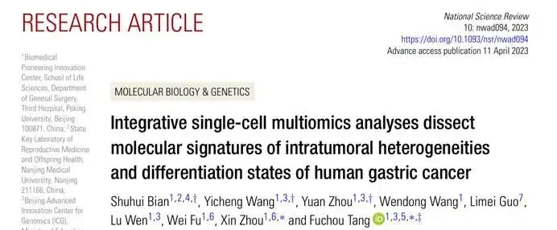
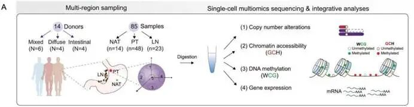
该研究利用胃癌根治性手术切除标本，收集配对的癌旁、原发灶、淋巴结转移灶并对每个肿瘤部位进行多点采样，对来自 14例胃癌患者的85个样品进行了优化的单细胞多组学（基因组拷贝数变异]、DNA甲基化组、染色质状态组、以及转录组）测序（scTrio-seq3），并结合同一采样位点的组织病理学分型结果进行了系统、深入的数据整合分析，精准绘制了胃癌的单细胞DNA甲基化图谱，揭示了混合型胃癌不同分化状态癌细胞的多个组学层面的关键分子特征以及免疫微环境特征，有望为胃癌的临床诊断和治疗提供新的理论依据。
八、题目：scNanoHi-C: a single-cell long-read concatemer sequencing method to reveal high-order chromatin structures within individual cells
IF：32.1
期刊：Nature Methods
发表日期：2023.10
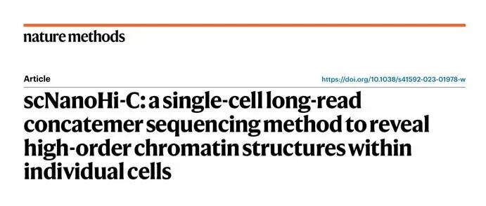
调控基因组元件的高阶三维(3D)组织是基因调控的基础，但尚不清楚哺乳动物基因组中的多个调控元件如何在单个细胞内相互作用。为了解决这个问题，作者开发了scNanoHi-C ，应用于纳米孔长读测序来探索单个细胞内全基因组近端高阶染色质。作者表明，scNanoHi-C可以可靠有效地描绘三维染色质结构 ，并区分单个细胞的结构亚型。 该方法还可用于检测基因组变异，包括拷贝数变异和结构变异，以及支撑单细胞基因组的从头组装。该研究发现在整个基因组的活性染色质区域中存在广泛的高阶染色质结构，并且在单个细胞中系统地鉴定了增强子与其靶启动子之间的多向相互作用。
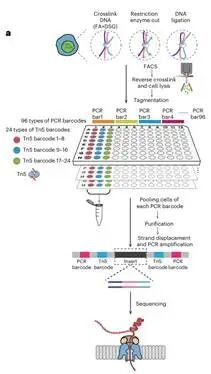
九、题目：scNanoCOOL-seq: a long-read single-cell sequencing method for multi-omics profiling within individual cells
IF：25.9
期刊：Cell Research
发表日期：2023.09
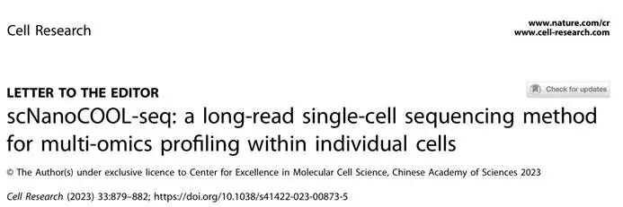
该研究首次报道了名为scNanoCOOL-seq的单细胞多组学测序技术。该技术整合了三代测序平台 (单分子测序平台) 和 scCOOL-seq原理，能够实现在一个单细胞中同时精准检测基因组(拷贝数变异)、DNA甲基化组、染色质可及性以及转录组等多个组学层面的信息。
scNanoCOOL-seq技术主要采用亚硫酸氢盐转化和单接头PCR扩增的策略，最终获得长度约为900 bp的基因组DNA扩增片段。如下图所示，scNanoCOOL-seq技术的实验流程主要包括：1) 通过温和的方式进行细胞裂解和体外M.CviPI酶加甲基化后，进行单细胞的核质分离；2) 单细胞的细胞核部分经过亚硫酸氢盐处理和类PBAT策略的单接头扩增后用于Nanopore平台的单分子测序 ；3) 单细胞的细胞质部分用于scRNA-seq文库构建 (优化的STRT-seq) 后进行转录组检测。
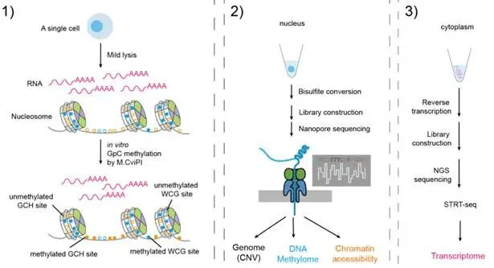
十、题目：Single-Cell Multiomics Sequencing Reveals Prevalent Genomic Alterations in Tumor Stromal Cells of Human Colorectal Cancer
IF：44.5
期刊：Cancer Cell
发表日期：2020.12
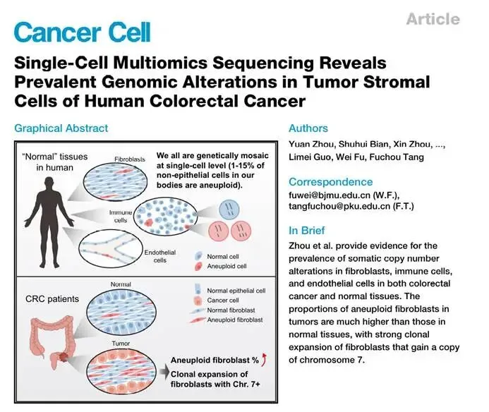
该研究从21例微卫星稳定的结直肠癌患者手术切除标本中获取了癌组织、淋巴结转移组织、癌旁组织以及外周血样品，同时从6例非癌症个体中获取了外周血样品，对多种非上皮细胞进行了高精度的单细胞基因组和转录组双组学测序**。该研究首先建立并优化了一项单细胞基因组和转录组双组学测序技术，通过对单个细胞的细胞核和细胞质进行分离，使得对同一个单细胞能够同时进行转录组和基因组测序。** 并在此基础上系统地研究了肿瘤微环境以及正常组织中免疫细胞、成纤维细胞和血管内皮细胞中基因组拷贝数变异的发生频率和特征，揭示了肿瘤微环境中发生基因组拷贝数变异的成纤维细胞存在特异性克隆扩张现象；同时，通过单细胞转录组数据分析发现了5个肿瘤微环境中成纤维细胞特异性表达的肿瘤标志物，均与结直肠癌预后密切相关。

如何联系我们

 留一个领取资料、开箱即用的单细胞分析镜像的微信号[Biomamba_zhushou]，方便各位随时交流。同时我们也构建了交流群矩阵，欢迎大家入群讨论。
大家可以阅读完这几篇之后添加给生信入门初学者的小贴士
没有检索，就没有发言权
留一个领取资料、开箱即用的单细胞分析镜像的微信号[Biomamba_zhushou]，方便各位随时交流。同时我们也构建了交流群矩阵，欢迎大家入群讨论。
大家可以阅读完这几篇之后添加给生信入门初学者的小贴士
没有检索，就没有发言权
已有生信基地联系方式的同学无需重复添加

 您点的每个赞和在看，我都认真当成了喜欢
您点的每个赞和在看，我都认真当成了喜欢